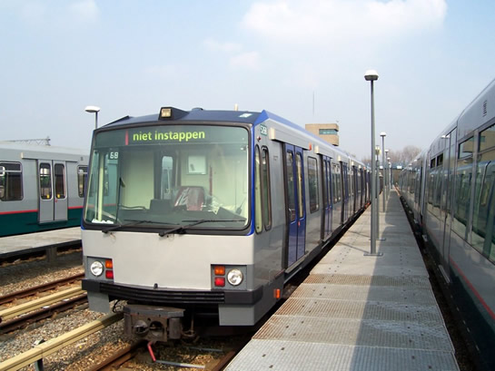
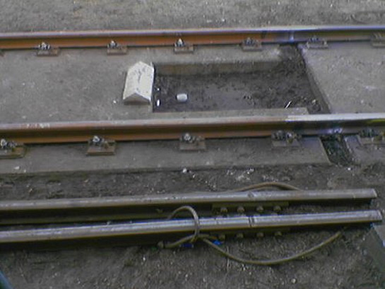

RandstadRail begint: Type T tentoongesteld...
- dinsdag 02 december 2008 21:33
- Geschreven door Joachim
Vier rijtuigen Type T in de serie 5261 t/m 5271 zijn inmiddels gereed voor vertrek naar RandstadRail. De rijtuigen zijn volledig aangepast aan de RandstadRail-maatstaven en in week 26 (eind juni) moeten de de overige zeven rijtuigen klaar zijn voor RandstadRail.
Op zaterdag 3 juni vindt de officiële overdracht van de rijtuigen naar RandstadRail plaats. Naar alle waarschijnlijkheid zal er in de nacht van vrijdag 2 juni op zaterdag 3 juni een rijtuig Type T gestald worden op de Hofpleinlijn, boven rijksweg A20, ter promotie. Het rijtuig zal hier een maand blijven staan. Twee andere rijtuigen worden, als alles meezit, volgende week naar de Nedtrain-werkplaats in Leidschendam vervoerd. Eén van de rijtuigen zal ook een plaats krijgen boven rijksweg A4, bij de eerder genoemde werkplaats in de buurt.
In de regio Haaglanden is een dergelijke stunt met een nieuw Haags RandstadRailvoertuig al een feit. In Zoetermeer Oosterheem werd tramrijtuig 4004 op het viaduct van RandstadRail getakeld. Voor foto's en informatie kijk op  De Digitale Tram.
De Digitale Tram.

Rijtuig 5268, nog niet voorzien van een logo op de voorzijde, op emplacement Waalhaven spoor 123.
Rookontwikkeling
Gisteren strandde er een combinatie metrorijtuigen Type T op station Schenkel spoor 1 in verband met rookverschijnselen en een sterke brandlucht. Het betrof een klein brandje onder een van de metrorijtuigen dat met een poederblusser geblust kon worden. De combinatie is overgebracht naar remise 's-Gravenweg voor herstel. Het metroverkeer richting Schiedam Centrum liep een onbekende vertraging op.
Tourniquets & OV-Chipkaart (TCK)
Bij diverse Verkoop & Oplaadautomaten kan sinds deze week een anonieme OV-Chipkaart verkregen worden. Eerder konden deze kaarten alleen verkregen worden bij de RET Klantenservice. De kaart kost € 3, exclusief het opgeladen reisproduct/reissaldo. De wegwerpkaart, de derde optie naast een persoonlijke en een anonieme OV-Chipkaart, is nog niet te koop.
Vervanging ES-lassen
De vervanging van de Elektrische Scheidings (ES) lassen vordert gestaag. Op steeds meer plaatsen, voornamelijk op het sneltramtracé, worden de lassen vernieuwd of waar dat mogelijk is, verwijderd. De werkzaamheden vinden 's nachts plaats. Hiervoor gaat locomotief 6101 met de werkwagens 7015, 7012, 7011 en 7007 de baan op. Overdag staan deze werkwagens geparkeerd op de sporen 361 en 362 van emplacement 's-Gravenweg.

Op station Hesseplaats werd een ES-las verwijderd. Op de foto (waarvoor dank) hierboven is dat goed te zien.
5207
Rijtuig 5207 is teruggekeerd naar remise 's-Gravenweg na een revisie in lijnwerkplaats Waalhaven. Het rijtuig keerde op 18 mei terug, gesleept door rijtuig 5211.
Nieuwe pantograaf
De rijtuigen 5405 en 5241 zijn voorzien van een nieuwe pantograaf. Beide rijtuigen verloren enkele weken geleden elk apart een pantograaf. De 5405 verscheen nog niet in de dienst met de nieuwe pantograaf, de 5241 wel.
6001
Locomotief 6001 is teruggekeerd na een revisie in de Centrale Werkplaats Kleiweg. De locomotief is, in tegenstelling tot de locomotieven 6101 en 6102, niet voorzien van de groene kleurstelling. Materialenwagen 7101 (Pipowagen) verblijft nog in de Centrale Werkplaats.